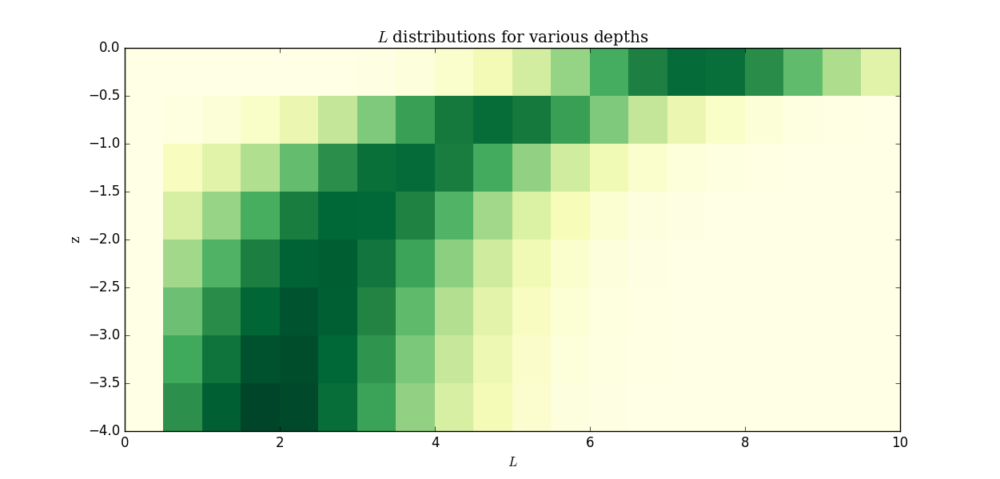
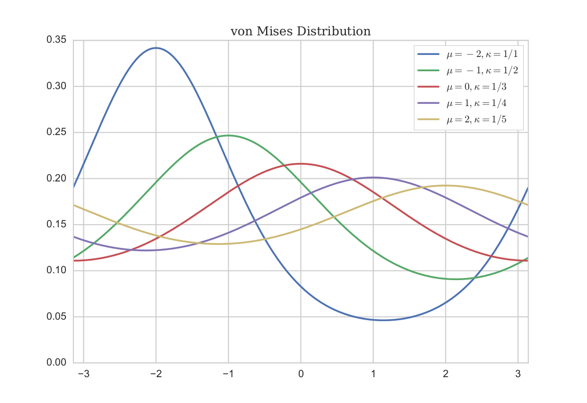

Modeling Self-Shading of Light in Kelp Farming Aquaculture Operations
Oliver Evans
July 12, 2016
University of Akron
Clarkson University
SINTEF Fisheries and Aquaculture
MACROSEA
Growing kelp is great!
How can we optimally farm kelp?
?
With a math model!
Model Flowchart

Assumption #1
Fronds are geometrically similar kites.


Tip pointed at an angle $\theta_f$
Spatial setup

Assumption #2
The rope is vertical and does not bend
Assumption #3
Fronds are horizontal, flat, and only rotate in the $xy$ plane
Assumption #4
Fronds have a uniform vertical spacing (number density)
Primary interest
Change in length distribution over time
Ultimately, total harvestable biomass
Approach
Partition $z$ and $L$ into discrete bins 
Assumption #5
Frond angles are randomly distributed according to a von Mises distribution centered at $\theta_w$, the direction of the water current, and sharpens as $v_w$, current speed increases
von Mises Distribution
$P_{\theta_f}(\theta_f) = \frac{e^{(v_w)\cos(\theta_f-v_w)}}{2\pi I_0(v_w)}$
Once again...
So how much does a particular frond grow?
$\frac{dL}{dt} = G(A,L,t)$
$G$: growth function = ?
$A$: light absored by frond
Well, then how much light does it absorb?
$A = \iint_F I(\theta_p,r_p,z_p)\,d\theta_p dr_p$
$I$: Light available at the point $(\theta_p,r_p,z_p)$
And how much light is available?
$I = I_0(1-\beta)^{N_s}e^{-k_az_p}$
$I_0$: Surface intensity (constant)
$\beta$: absorbance of fronds (constant)
$k_a$: attenuation coefficient (constant)
$N_s$: Expected number of fronds shading a point
Now, how many fronds shade the point?
Good question. . .
$\displaystyle N_s = \sum_{k=0}^{k_p} P_s\left(\hat{\theta}_p(z_k-z_p),\hat{r}_p(z_k-z_p)\right)$
(seems plausible, but probably not correct)
$(\hat{\theta}_p,\hat{r}_p)$: projected point
$P_s$: Probability of a point being shaded by a frond in the same plane
Let's start with $P_s$
Condition for shading:
$(\theta_p,r_p) \in F(\theta_f,L)$
Equivalently:
$(\theta_f,L) \in R_s(\theta_p,r_p)$
2D Length-angle distribution
For a given depth bin $z_k$, we have independent probability distributions for the length and frond angle, $P_L$ and $P_{\theta_f}$
For independent events $A$ and $B$,
$P(A \cap B) = P(A)P(B)$
Then $P_{\theta_f}P_L$ is the probability of a frond having a particular length and angle
So $P_s(\theta_p,r_p) = \iint_{R_s} P_{\theta_f}P_L \,d\theta_f dL$
$P_{\theta_f}(\theta_f)P_L(L)$ and $R_s(\theta_p,r_p)$

Woohoo!

Now, back to 3D!
Project $(\theta_p,r_p)$ on to the $z_f$ plane
$\displaystyle \quad N_s = \sum_{k=0}^{k_p} P_s\left(\hat{\theta}_p(z_k-z_p),\hat{r}_p(z_k-z_p)\right)$
3D Light Field
Recalculating the length distribution
Last time!